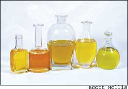
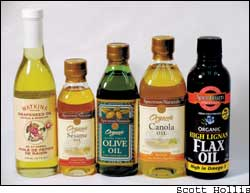
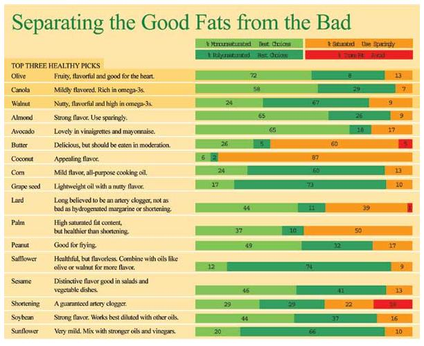
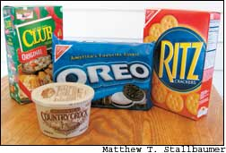

Some fats are killing us, some actually make us healthier. Which ones are you eating?
“Butter (high in saturated fat) is bad for you; use margarine instead.” That’s the message most of us have been hearing for the last several decades. But now scientists have discovered that the hydrogenation process used to make margarine and shortening produces trans fats that are actually twice as bad for our hearts as saturated fats. Butter, it turns out, is a healthier choice than many brands of margarine and shortening. Small wonder that we’ve been so confused all this time.
It’s still true that fats and oils are high in calories. And it’s still true that most of us eat too much fat and more total calories than we need, causing us to gain weight. But fats and oils are an essential part of a healthy diet, and some are more healthful and taste better than others. To help you make the best choices, here’s a rundown of the health and flavor aspects of fats and oils:
Fats, carbohydrates and proteins are the major components of all foods. Fats give us energy; help regulate our blood pressure, heart rate, blood flow and nervous systems; and carry fat-soluble vitamins (A, D, E and K) throughout our bodies. Fats also make us feel satisfied, thus helping us eat fewer calories. A recent study from Oxford, England, shows that eating fat ignites certain pleasure sensors in the brain - the same areas that light up at the sensation of a caress, the scent of a seductive perfume or upon winning money.
Fats are dense in calories - twice as much as carbohydrates and proteins - which is why we need to watch how much of them we eat.
They come in four basic types: monounsaturated, polyunsaturated, saturated and trans fats, all of which you can quickly learn to tell apart. The good fats are monounsaturated and polyunsaturated fats; in addition to olive and canola oils, other mono oils easy to find in the grocery store are peanut and avocado. Polyunsaturated fats that are widely available in grocery stores include safflower, corn, sunflower, soy and cottonseed oils.
Saturated fat, primarily found in meat, chocolate and full-fat dairy products, has both good and bad effects on our health. Trans fats are formed when oils are partially hydrogenated so they resemble saturated fats in texture and consistency. Many brands of margarine and shortening contain significant amounts of trans fats. Scientific research now shows that many trans fats contribute more to heart disease than the saturated fats.
Different types of fats directly impact the cholesterol levels in our bodies. So, the trick to a heart-healthy diet is knowing the ways cholesterol is affected by different types of fat. Cholesterol moves back and forth from our livers to our tissues in two basic forms: LDL (low density lipoprotein particles or “bad” cholesterol) and HDL (high-density lipoproteins or “good” cholesterol). The LDL shuttles fat and cholesterol from the liver to cells that need it, but fat can build up inside the walls of our arteries in the process (doctors call this “plaque build-up”). The HDL returns cholesterol to the liver and doesn’t build up plaque at all.
Monounsaturated and polyunsaturated fats are found primarily in plant, nut and seed sources, and both lower bad LDL cholesterol while raising good HDL. Monounsaturated fats are typically liquid at room temperature, although they solidify somewhat if refrigerated.
An important type of polyunsaturated fat is omega-3 fatty acid, a superstar of the nutrition world. It reduces the risk of irregular heartbeats, lowers blood pressure and may protect against certain types of cancer. The best omega-3 sources are flaxseeds, green leafy vegetables and walnuts and their oils, as well as fatty fish such as salmon, mackerel, trout and herring.
Recent research shows that saturated fats are not quite the villain they’ve been portrayed to be all these years. It’s true that a diet high in saturated fat will raise LDL cholesterol, but that negative effect is counterbalanced by saturated fat’s ability to also raise the good HDL cholesterol. Saturated fats are found in butter, whole milk, cheese, red meat, chocolate and coconuts. They are solid at room temperatures.
Some trans fats naturally occur in small amounts, but the majority are made when oils are “hydrogenated” by heating in the presence of hydrogen and fine particles of nickel metal. The process changes the properties of the oil, making it more solid and easier to ship and store. But in the process, these trans fats, which we now know are more detrimental to our health than saturated fats, are formed.
In the wake of growing concerns about fat in the 1950s, the mass marketing of these hydrogenated products took off, and today, you’ll find them in everything from soda, crackers and cookies to French fries, peanut butter and many microwave popcorns (see “Tracking Down Trans Fats,” above).
Processed food manufacturers now are under government mandate to disclose trans fat content on nutrition labels by 2006. “Trans fat-free” labels are already appearing on some foods that previously depended heavily on them, but removing this unhealthy ingredient entirely from industrial food products is a major undertaking.
The research shows trans fats have the worst possible effect on cholesterol metabolism - they increase LDL (the bad) cholesterol, and they decrease HDL (the good) cholesterol. According to Walter C. Willett, chairman of the Department of Nutrition at Harvard University, “This combined effect on the ratio of LDL to HDL is double that of saturated fatty acids.” Even small amounts of trans fats in our daily diets can do a large amount of damage, he says. For every 2-percent increase in the amount of calories from trans fat, the risk of heart disease increases by 36 percent.
And incredibly, replacing that same 2 percent of calories from trans fat with unsaturated fats conversely can reduce the risk of heart disease by as much as 53 percent.
Tracking Down Trans Fats
Because researchers have discovered that some hydrogenated oils used to make margarine and shortening are unhealthy, the Food and Drug Administration is requiring food manufacturers to begin listing the amount of trans fats on nutrition labels, but the new regulations don’t go into effect until 2006. Go to www.transfree america.org for more information. Here’s how you can avoid them in the meantime:
• Avoid foods that contain ingredients such as “partially hydrogenated vegetable oil” or “shortening,” unless they are labeled “Trans fat-free.”
• Pay attention to the order of the ingredients (they are listed in descending order). If a partially hydrogenated oil appears near the beginning that means the trans fat content is high and you may want to make a different choice. If the words appear toward the end, the food may be acceptable.
• If you want to know what percentage of trans fats a product contains, do the math. Subtract the specific types of fat (i.e., saturated fat) from the total fats. The resulting number is a good estimate of the amount of trans fat per serving.
Source: The Trans Fat Solution: Cooking and Shopping to Eliminate the Deadliest Fat from Your Diet, by Kim Severson (Ten Speed Press, 2003).
|
 The lighter-flavored vegetable oils such as canola, corn and sunflower are good all- purpose cooking and baking oils. Sesame and peanut oils can be used in anything from salads to stir-fry dishes. As for storage, most vegetable oils store for several months in the pantry. Flaxseed, sesame and walnut require refrigeration. |
 |
 |
|
 |
|
|